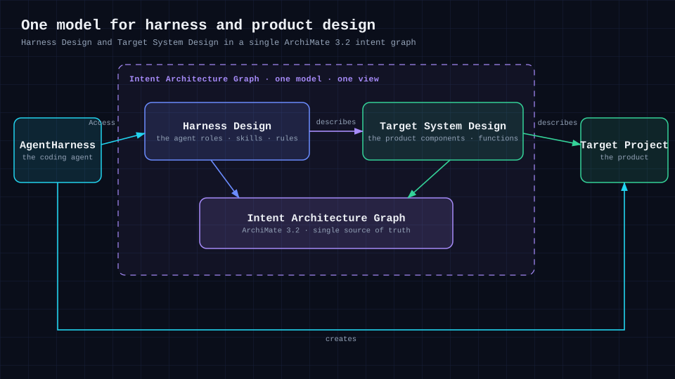
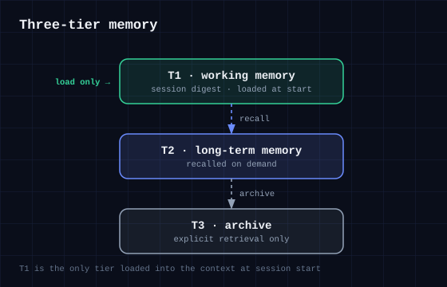
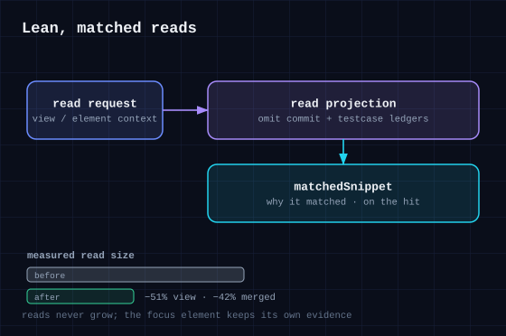
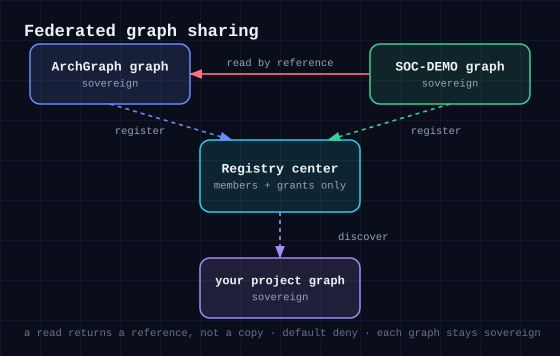

ArchGraph · architecture-graph driven Agentic Engineering
ArchGraph turns one intent architecture graph into your agent's durable memory and your product's design — read and written through a single MCP interface. The built-in ontology is ArchiMate 3.2; a repository can plug in its own.
One install, one interface to learn, and a graph that stays clean because writes are deduplicated.
$ npm install -g archgraph-argo $ argo-deploy
# inside your project, ask the agent to run: $ argo init # initializeWorkspace MCP call
What is this?
Running coding agents on a real codebase hurts in two ways: every session starts cold, and the "why" behind the system lives nowhere. ArchGraph makes one architecture graph the single source of truth — a durable, tiered memory the agent reads semantically and writes without ever duplicating, plus a model you can reason over. It is one MCP interface to install and learn.

Bring your own ontology
ArchGraph separates the core from the ontology. A repository drops a schema bundle under .argo/schema/ — element and relationship types, endpoint rules, an actor contract — and validation, MCP guidance, and the .qea projection follow it. A bundle can extends the built-in default and add its own types, with no framework change.
Its active schema extends ArchiMate 3.2 with a UML 2 state-machine profile, resolved at runtime from .argo/schema/ rather than hardcoded in the framework.
Capabilities
Tiered long-term memory · pluggable ontology · semantic + structural retrieval · deduplicated writes · acceptance-test-first traceability · Enterprise Architect (.qea) interop · federated sovereign graph sharing · one MCP interface across six harnesses. Each has a short page.


matchedSnippet.
Install & deploy
One argo-deploy registers the MCP server and installs the skills and rules into GitHub Copilot, Cursor, OpenCode, DeepSeek Harness, OpenClaw, and Codex (agents where the host supports them), then walks you through ~/.argo/.env.
npm install -g archgraph-argo argo-deploy
Everything works out of the box except semantic (Graph RAG) queries, which need a Neo4j instance and an OpenAI-compatible embedding endpoint. Context reads, writes, and Enterprise Architect interop work without them.
How to use
Step 0 — initialize the workspace. In a fresh project, ask your coding agent to run argo init (the initializeWorkspace MCP call). It creates a starter design/KG/SystemArchitecture.json when missing, performs the first JSON → Neo4j sync, initializes the semantic lifecycle, and verifies the architecture.
Then open your project and start a coding agent. It will:
The intent architecture graph — modelled by default in ArchiMate 3.2 — is the single source of truth.
Community
ArchGraph runs on open co-building. The community shares and reuses architecture subgraphs across projects. Sharing is federated: each project keeps its graph sovereign, and other members read opened content by reference. The center is a registry–broker that holds federation metadata, never content — register, discover, authorize, read.
Links
Getting started · Capabilities · Worked case: Team Graph · Insights · GitHub · graph-wiki